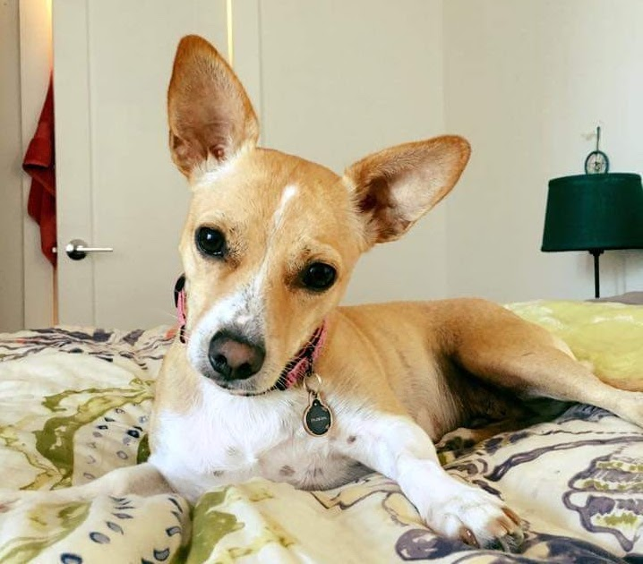

Seph & Sam
are getting married
december 9th, 2017
in brooklyn, ny
Join us
Saturday, December 9th, 2017
at
Brooklyn Winery
213 N 8th St
Brooklyn, NY
More details to come!
the story of seph + sam
Sam "comps" Harvard's rock radio department, Record Hospital. Seph and Parker (the best man) are in charge of deciding if she makes it on. Despite Sam missing an assigned shadowing session to go to a Katy Perry concert, they deem her worthy and let her join.
Spring, 2009
Seph and Sam go to a Japandroids show together, after all their friends bail, losing their voices to "Young Hearts Spark Fire."
Fall, 2009Both live in Cambridge for the summer. Seph attempts to explain the allure of soccer while watching a World Cup game at Sam's apartment. They go to many more shows.
Summer, 2010Despite having tickets to a Pavement reunion show in New York, Sam bails on the trip and ends up at an Advocate party. They dance themselves clean.
Fall, 2010They graduate, and forego worrying about the lack of job prospects to spend the summer traveling in Europe. They stay with friends in Cambridge and Paris, work on a horse farm in Spain, and learn far more than they ever cared to know about formula one racing.
Summer, 2011
They decide to try their luck in San Francisco. Sam packs just a suitcase. A few months later, Seph gets his driving permit, and they take turns driving her car from Cape Cod to SF by way of Chicago, St. Louis, the Grand Canyon, and San Diego.
Fall, 2011
Seph and Sam move in to a beautiful apartment with their friends Will and Alison. On a whim, they drive to Marin, buy four baby chicks, and build them a coop.
Spring, 2013They travel around South America, and end up in Brazil at the World Cup. Sam starts to come around on the whole soccer thing.
Summer, 2014After three and a half years, two apartments, countless camping trips, four bikes, and several hairstyle changes, Seph and Sam move to Brooklyn, to the delight of both their families.
Spring, 2015

Seph and Sam learn what a co-op apartment is, and buy one. It is, coincidentally, in a dog friendly building, so Ruby soon joins the family.
Spring, 2016On a rainy Sunday morning in October, Seph wakes up Sam (a bit on the early side, if she's being honest) and asks her to marry him. Of course, she says yes.
Fall, 2016